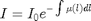
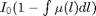
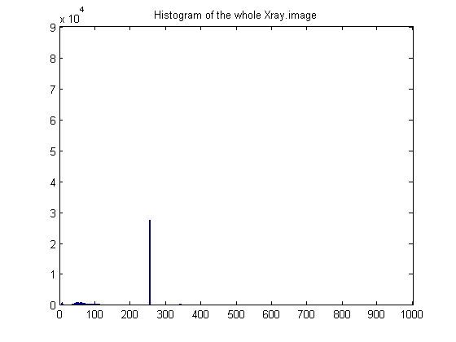
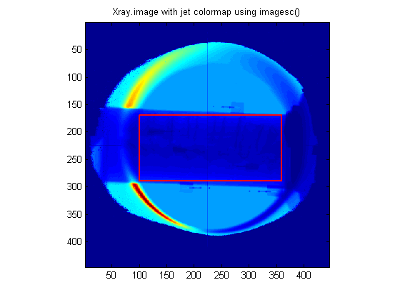
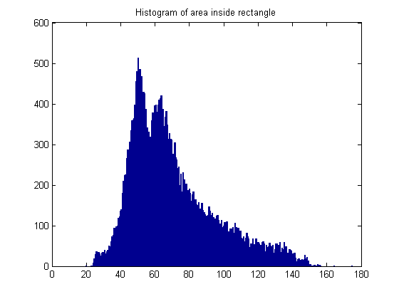
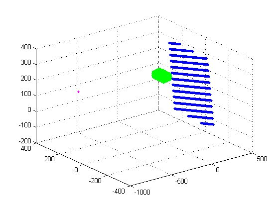

IMPORTANT NOTES
Contents
1
If is attenuation coefficient than integral along beams is an incorrect pixel value fro projection. Correct pixe value would be . Even if use the linear term to approximate the value of this exponent, still we will have 
[ct,Te,Ve,Xray]=Driver1('materials.mat'); % question 1 [ct, Te, Ve, Xray]=Driver2( ct, Te, Ve, Xray ); % question 2
ans =
0
ans =
956.7686
    I have a question re question2
Why not inverse transform? Double-check the wording
question 3
iPar=[0 0 0 90 0 0 ] [ oX,oY,oZ ] = rigidTrans( ct, iPar); hold on; ts=150; plot3(oX(1:ts:end),oY(1:ts:end),oZ(1:ts:end),'.','Color','y');
plot3(oX(1),oY(1),oZ(1),'o','Color','k'); plot3(Xray.gridX(1),Xray.gridY(1),Xray.gridZ(1),'o','Color','k'); plot3(ct.gridX(1),ct.gridY(1),ct.gridZ(1),'o','Color','k'); axis image;
question 4 - projection
iStep=1;
% val=interpn(ct.gridX,ct.gridY,ct.gridZ,double(ct.volume),ct.gridX./2,ct.gridY./2,ct.gridZ./2);
[ oImage, oMask ] = drr( ct, Xray, iStep);